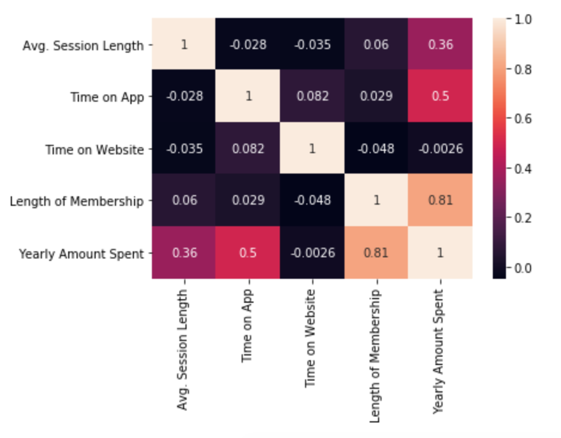
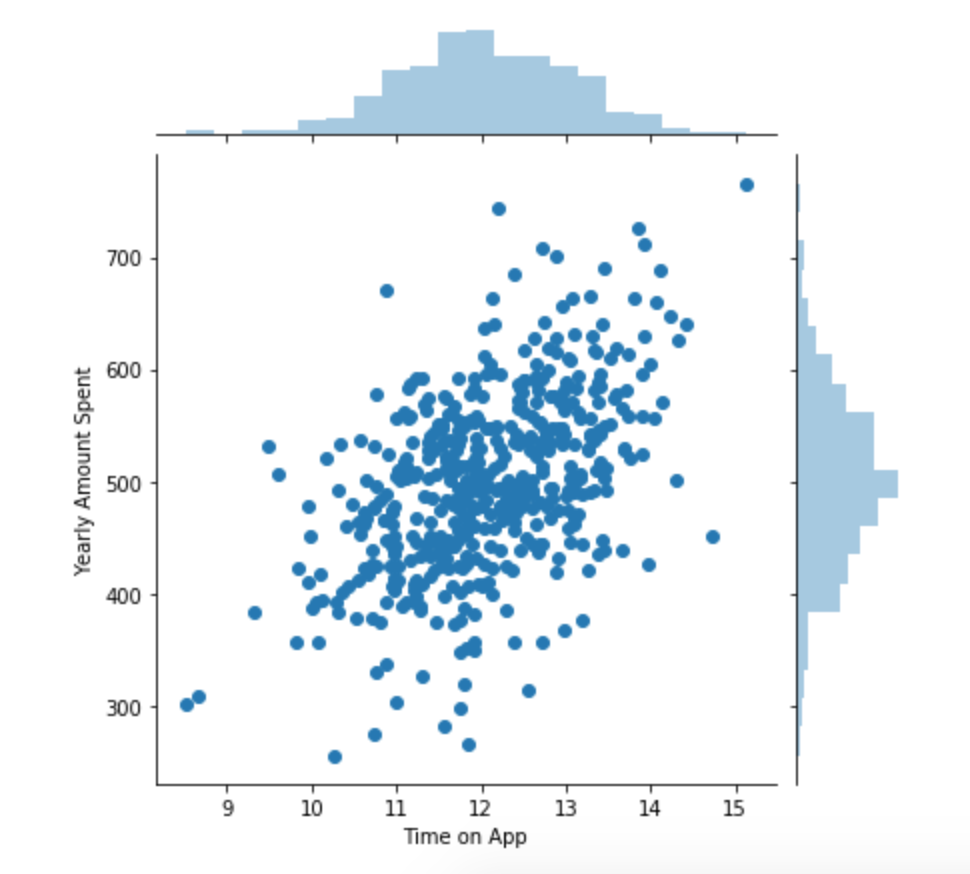
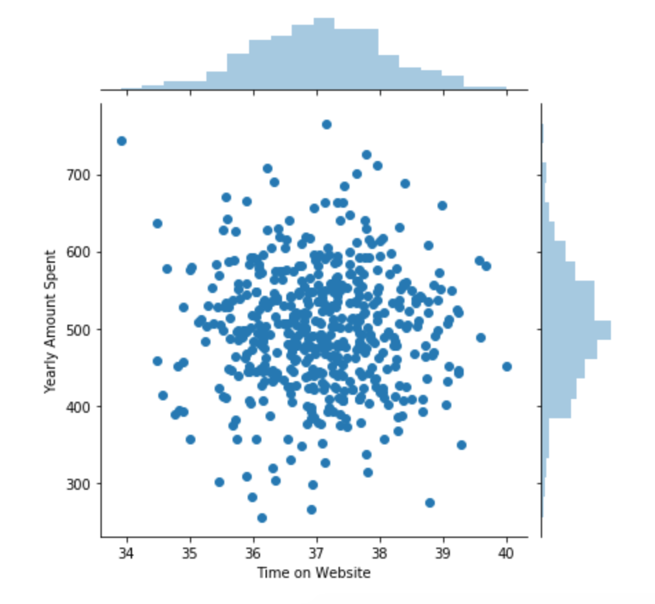
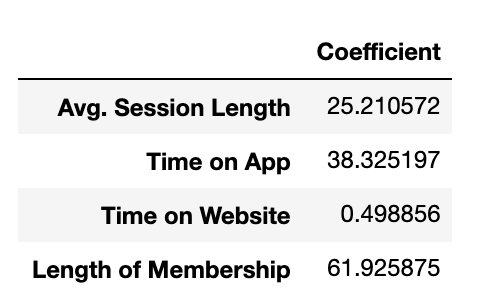

Ecommerce: Should we focus on mobile or web development?
Background
An ecommerce company based in New York City sells clothing online and they also have in-store style and
clothing advice seesions.
Technologies
Python, Pandas, Numpy, Seaborn, Scikit-learn
Goal
Based on a customer dataset given by the company, find out whether the company should focus on developing
mobile app or web app to best serve their customers that will
in turn generate the most profit for the company.
Let's begin!
Step 1: Explore the given dataset
Let's read in the dataset
import pandas as pd
customers = pd.read_csv("ecomm_customers")
Check what columns are given
list(customers.columns)
>>> ['Email', 'Address', 'Avatar', 'Avg. Session Length', 'Time on App', 'Time on Website', 'Length of
Membership', 'Yearly Amount Spent']
Since our goal is to maximize the company's profit, "Yearly Amount Spent" seems to be a crucial feature we
will be focusing on.
"Time on App" and "Time on Website" also seem to be important to answer the
original
question "Mobile or Web?".
Now, let's visualize the correlation between each of the features using Seaborn.
import seaborn as sns
sns.heatmap(customers.corr(), annot=True)

A correlation value of 1 means that the two features correlate to each other completely.
For example, it makes sense that "Time on App" is 100% correlated with "Time on App" itself.
We can safely ignore the 1s in this plot.
We can see there is a very high correlation value of 0.81 between "Yearly Amount Spent" and "Length of
Membership". Hence, we know that the longer the membership, the more amount that customer will
spend.
Since this insight doesn't give a direct answer to our original question of "Mobile or Web?", let's continue
exploring the data given.
Visualize "Time on App" vs "Yearly Amount Spent"
sns.jointplot(x="Time on App", y="Yearly Amount Spent", data=customers)

"Time on Website" vs "Yearly Amount Spent"
sns.jointplot(x="Time on Website", y="Yearly Amount Spent", data=customers)

From the above two plots, we can see "Time on App" has a more linear relationship to "Yearly Amount Spent" (more
time on app, more
profit to the company).
At this point, we can already conclude that the mobile app is more profitable than the website.
However, let us still build a Linear Regression model to see if we missed out any crucial components
from sklearn.model_selection import train_test_split
y = customers['Yearly Amount Spent']
X = customers[['Avg. Session Length', 'Time on App', 'Time on Website', 'Length of Membership']]
X_train, X_test, y_train, y_test = train_test_split(X, y, test_size=0.3)
build the model:
from sklearn.linear_model import LinearRegression
lm = LinearRegression()
lm.fit(X_train, y_train)
Using the model, let's see how all the features relate to company's profit - "Yearly Amount Spent":
coeffs = pd.DataFrame(lm.coef_, X.columns)
coeffs.columns = ['Coefficient']
coeffs

Interpretation:
1. Every 1 unit (minute) increase in time spent on website would increase ~$0.499 in company's
profit.
2. Every 1 unit (minute) increase in time spent on mobile app would increase ~$38.325 in company's
profit.
Conclusion
The analysis suggests that mobile app is 76 times more profitable than the website.
However, it is unclear from the data whether the website is an important piece that supports the mobile
experience.
Hence, I suggest that the company invest just enough to make the website functional and decent. And focus the
rest of the available effort into optimizing the mobile experience and bringing customers onboard to using
the
mobile
app.
The End.
I hope you enjoyed the reading. <3